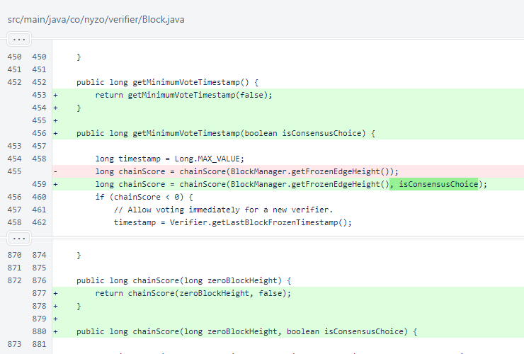
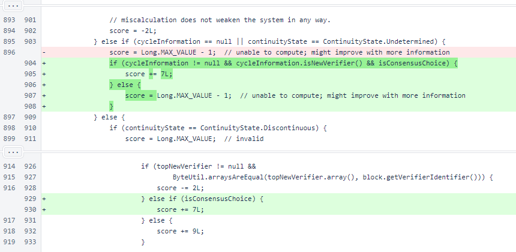
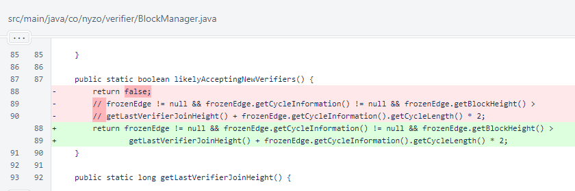
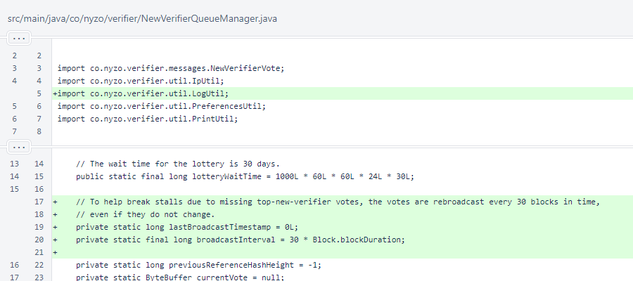
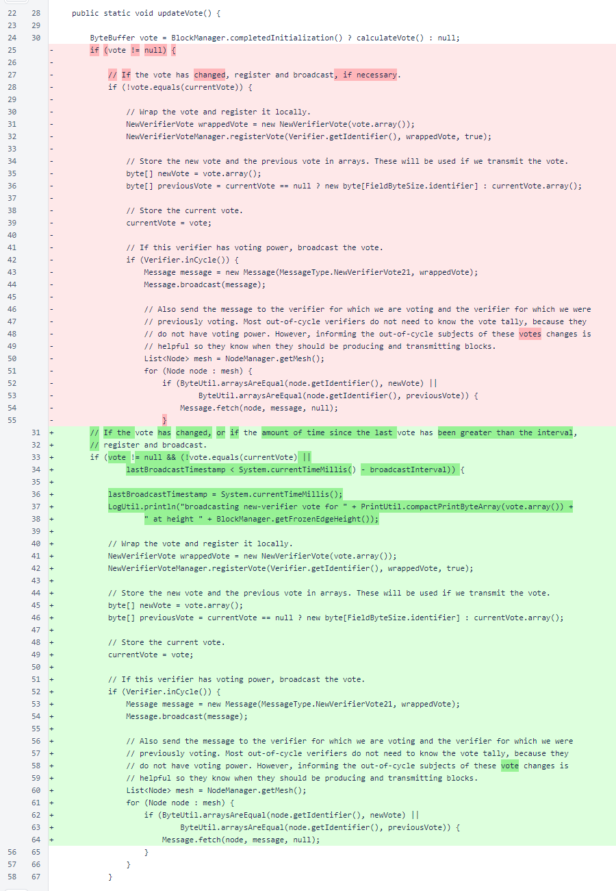
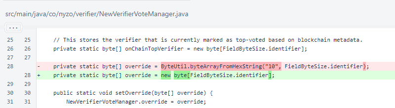
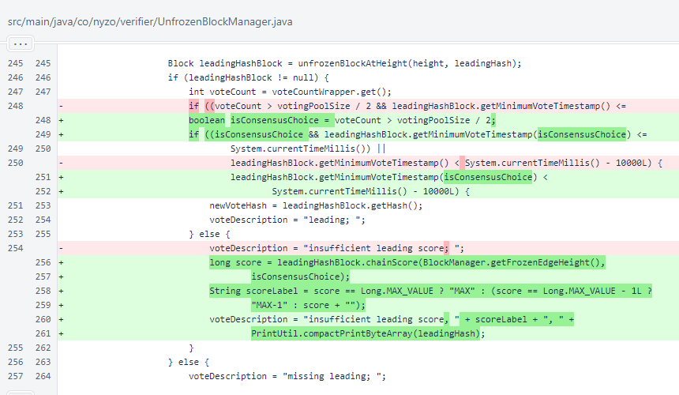
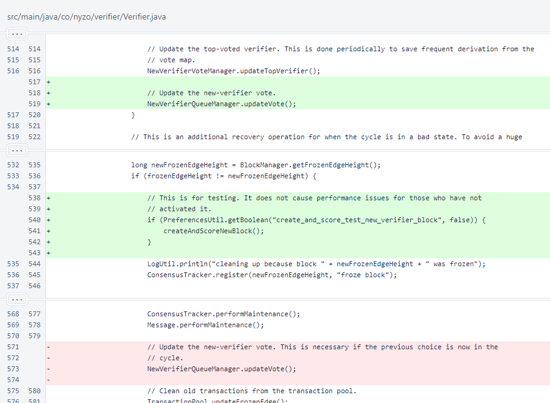
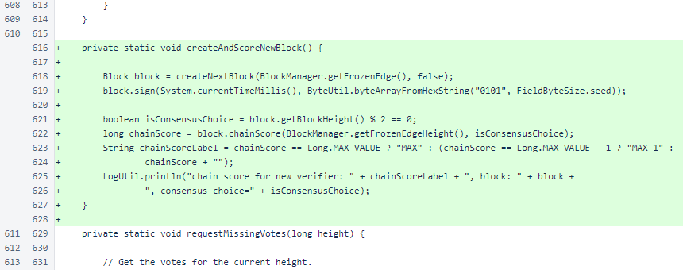

Nyzo version 593 (commit on GitHub) adds a fallback score calculation for blocks from new verifiers. This should prevent the stalls that occurred when attempting to add new verifiers to the cycle.
This version affects the verifier.
We have been planning on a full rework of the BlockManager class. The concept of the cycle, and the integrity of the rules of the proof of diversity, are central to Nyzo's validity as a challenger to proof-of-work. The BlockManager is responsible for maintaining information necessary to enforce proof-of-diversity rules, and it has done the job well. However, it is quite complicated, and this complication has led us to be exceptionally careful when making changes to this class.
In version 588, we made a change to the initialization process of BlockManager. While the code changes were small, we tested them extensively, and we reviewed the code repeatedly to ensure that no regressions were introduced.
However, when stalls started to appear when attempting to add new verifiers, those stalls certainly seemed to be tied to the BlockManager, leading us to be concerned that an unnoticed issue had gotten past our testing for version 588. Our first symptom correction, a modification of new-verifier scoring in version 590, was accurate in its location but lacking in its understanding of the root problem.
The second symptom correction, a retention of blocks in version 591, was similarly close but incomplete. When this correction failed, a request to temporarily close the cycle to new verifiers was issued. The frequent stalls were frustrating to cycle operators, and they were frustrating to us. We needed some time to step back and really understand the issue.
We thank the cycle for temporarily closing entrance, and we feel that we now have a sufficiently complete understanding of the problem.
The problem, as has been the case with several issues resulting in blockchain stall, was due to an incomplete initialization state concurrently in too many verifiers in the cycle. Similar has been seen with verifiers unable to score any blocks, thus unable to vote at all or produce blocks, which are depicted as orange on the cycle page.
In this case, the verifiers were unable to score blocks only from new verifiers. An additional two cycles of history are required for new verifiers than are required for existing verifiers with the current scoring logic. While we were concerned that our version-588 changes to BlockManager caused a regression, we found that versions older than 588 exhibited the same problem when tested.
The fixes for this version have been kept to a minimum for clarity. This is not a situation where we want to make sweeping changes to drastically improve the system, though we do intend to make such changes soon. This is a situation where we want a precise, targeted fix that corrects the problem and leaves little room for doubt over whether the problem was properly diagnosed and resolved.
In Block.getMinimumVoteTimestamp() and Block.chainScore(), an argument called isConsensusChoice was added. The default value of this argument is false, and the behavior of these methods is unchanged when the value is false.
In Block.chainScore(), the isConsensusChoice argument is used in the precise location, matching only the precise logic, that caused stalls before. If the continuity state cannot be determined, but the cycle information can be determined and the verifier is above the 50% consensus threshold, then a valid score (7) is assigned.
In BlockManager, the changes made to likelyAcceptingNewVerifiers() in version 592 were reverted.
In NewVerifierQueueManager, fields were added for sending top-new-verifier votes periodically even if they are unchanged. Timed updates can be especially useful when a stall occurs, because the normal changes and resulting broadcasts that occur due to blockchain progression are absent. These timed updates can help ensure continued coherence of information among the members of the cycle even if processing is not moving forward.
The NewVerifierQueueManager.updateVote() method utilizes the new fields to conduct a periodic broadcast even if the vote has not changed. A broadcast is still performed immediately when the vote changes.
In NewVerifierVoteManager, the hard-coded override of version 592 was reverted.
In UnfrozenBlockManager.updateVote(), the isConsensusChoice value is now passed to the getMinimumVoteTimestamp() method of the leading block. Note that this is the only consequential change in voting logic. The voteCount > votingPoolSize / 2 expression was encapsulated in the isConsensusChoice variable to allow reuse and to improve readability. A label describing the score is now appended to the vote description.
However, these do not voting change behavior. The only behavioral change is passing isConsensusChoice() to the leading block's getMinimumVoteTimestamp() method, which will result in a timestamp corresponding to a block score of 7 in limited cases that would have otherwise resulted in an unusable timestamp corresponding to a block score of Long.MAX_VALUE - 1.
In Verifier, the NewVerifierQueueManager.updateVote() method is now called on a regular timed interval instead of being called when a block is frozen. This ensures that it will continue to be called even if blockchain processing stalls.
Additionally, there is a new method, called once each time a block is frozen, to test scoring of a block from an out-of-cycle verifier.
The createAndScoreNewBlock() method creates a block, signs it with a dummy seed, and prints the score of the block.
If you want to activate the test method, add the following line to /var/lib/nyzo/production/preferences.
create_and_score_test_new_verifier_block=1
If you have activated this method and restarted your verifier running the latest code, you can observe the scoring problem that lead to the recent stalls, and you can see how the new isConsensusChoice argument corrects the problem. If you run the following command from the terminal on your verifier, you will see the scores for the test blocks as they are produced.
tail -f /var/log/nyzo-verifier.log | grep 'chain score for new verifier'
The test method uses a value of true for the isConsensusChoice parameter for even-height blocks and a value of false for odd-height blocks. When a verifier has just restarted, the score will alternate between MAX-1, the value assigned to an unscorable block, and 7, the value assigned to a new verifier that is the consensus leader.
chain score for new verifier: MAX-1, block: [Block: v=2, height=7821937, hash=39e2...5c32, id=5ef0...c775],
consensus choice=false
chain score for new verifier: 7, block: [Block: v=2, height=7821938, hash=4f98...e379, id=5ef0...c775],
consensus choice=true
chain score for new verifier: MAX-1, block: [Block: v=2, height=7821939, hash=a01a...4f88, id=5ef0...c775],
consensus choice=false
chain score for new verifier: 7, block: [Block: v=2, height=7821940, hash=3a13...edd2, id=5ef0...c775],
consensus choice=true
chain score for new verifier: MAX-1, block: [Block: v=2, height=7821941, hash=e8bb...a82e, id=5ef0...c775],
consensus choice=false
After two cycles, the verifier will be able to score new-verifier blocks on its own. At that point, you will see values alternate between 9, the value assigned to a least-preferred but scorable new verifier, and 7, the value assigned to a new verifier that is the consensus leader.
chain score for new verifier: 7, block: [Block: v=2, height=7826184, hash=e31b...8220, id=5ef0...c775],
consensus choice=true
chain score for new verifier: 9, block: [Block: v=2, height=7826185, hash=cdc1...b118, id=5ef0...c775],
consensus choice=false
chain score for new verifier: 7, block: [Block: v=2, height=7826186, hash=8b62...34dd, id=5ef0...c775],
consensus choice=true
chain score for new verifier: 9, block: [Block: v=2, height=7826187, hash=2d3a...e716, id=5ef0...c775],
consensus choice=false
chain score for new verifier: 7, block: [Block: v=2, height=7826188, hash=c4b0...daaf, id=5ef0...c775],
consensus choice=true
One final note: while we have tested, retested, and analyzed these changes thoroughly, recreating a test environment similar to the existing Nyzo cycle is exceptionally challenging. If some detail was overlooked and the blockchain continues to stall, rolling back to 592 or casting of invalid new-verifier votes can be used to block new-verifier entrances again to prevent repeated stalls.